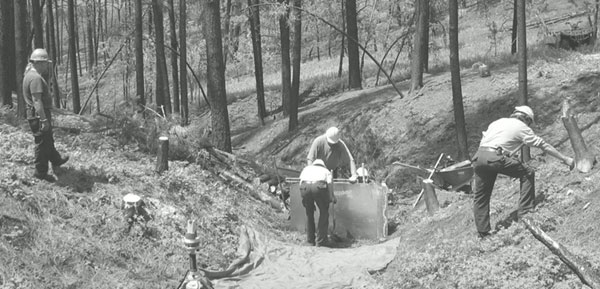
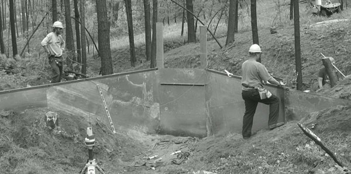
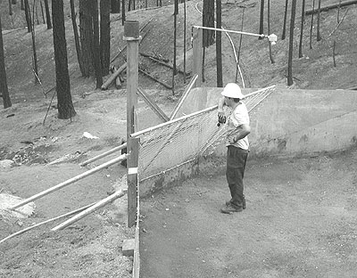
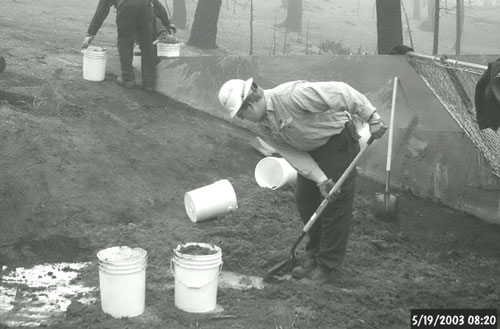

<html>
 <head>
  <title>
   Quick Response Small Catchment Monitoring Techniques For Comparing Postfire Rehabilitation Treatment Effectiveness
  </title>
 </head>
 <body bgcolor="ivory"><font face="trebuchet, tahoma, sans serif">
  <table width=100% border=1>
   <tr bgcolor="&99cc99"> 
    <th>
     <font face="Arial, Helvetica, sans-serif">
      <a href="https://www.fs.usda.gov">USDA Forest Service</a>
     </font>
    </th>
    <th>
     <font face="Arial, Helvetica, sans-serif">
      <a href="https://www.fs.fed.us/rm/">Rocky Mountain Research Station</a>
     </font>
    </th>
    <th>
     <font face="Arial, Helvetica, sans-serif">
      <a href="https://forest.moscowfsl.wsu.edu">Moscow, FSL</a>
     </font>
    </th>
    <th>
     <font face="Arial, Helvetica, sans-serif">
      <a href="https://forest.moscowfsl.wsu.edu/engr/">Soil and Water Engineering</a>
     </font>
    </th>
   </tr>
  </table>

  <table border=0 cellpadding="6" width="100%">
   <tr> 
    <td>
      
    </td>
    <td>
     <font face="Arial, Helvetica, sans-serif">
      <h3>
       Quick Response Small Catchment Monitoring Techniques For Comparing Postfire Rehabilitation Treatment Effectiveness
      </h3>
      Peter R. Robichaud and Robert E. Brown
     </font>
    </td>
   </tr>
  </table>

  <p>
   <font face="Arial, Helvetica, sans-serif"><b>Abstract</b> <br>
  Increased runoff and erosion commonly occur after wildfires with the onset of 
  precipitation events. Various erosion mitigation treatments are often used after 
  wildfires to reduce flooding and sedimentation. The effectiveness of these treatments 
  has not been well documented in the literature; therefore we undertook a rapid 
  response approach (within four weeks following fire suppression) to install 
  small catchment monitoring systems to compare treatment effectiveness. A paired 
  watershed approach uses two adjacent and similar catchments (5-20 ac) after 
  wildfires, treating one catchment and using the other catchment as a control. 
  We developed a rapid response monitoring system that can be installed in a few 
  weeks to monitor sediment yield and runoff response. These systems are usually 
  left in place for three to five years. </font>
<p><font face="Arial, Helvetica, sans-serif">Each installation has a complete 
  weather station and electronic measuring devices to record streamflow and sediment 
  accumulation in a storage basin. The sediment basins are cleaned out manually 
  after each storm event in order to relate the event (intensity, amount and duration) 
  to runoff and sediment yield. The data is automatically transmitted each day 
  via cell phone or radio transmission to our computer server, thus making the 
  data available daily on our web page. We have installed six paired catchments 
  to date in Colorado, Washington, two in California, and two in Montana. Preliminary 
  results suggest that 1) first year storm events produce the largest runoff and 
  sediment response and 2) treatment effectiveness is less with high intensity 
  short duration storm events. This rapid response protocol allows for quick installation 
  of a monitoring system to provide an assessment of treatment effectiveness.<br>
  </font></p>
<p> <font face="Arial, Helvetica, sans-serif"><b>Keywords:</b> erosion, sedimentation, 
  paired watersheds, instrumentation, data logger </font>
<p> <font face="Arial, Helvetica, sans-serif"><b><font size="3">Introduction</font></b> 
  </font>
<p><font face="Arial, Helvetica, sans-serif">Soil erosion after wildfires in forest 
  and range environments is often a land management issue due to effects of sediment 
  on water quality and downstream values at risk. Rainfall-induced soil erosion 
  commonly occurs after wildfires. Various methods have been used to estimate 
  sediment yields after wildfire; however, few studies have actually measured 
  postfire erosion (Robichaud et al. 2000). Additionally, postfire mitigation 
  treatments used to reduce runoff and erosion have not been rigorously evaluated 
  to determine if they are meeting treatment objectives (Robichaud et al. 2000, 
  GAO 2003). </font>
<p><font face="Arial, Helvetica, sans-serif">Therefore, monitoring postfire treatment 
  effectiveness has been a research focus in recent years. Small catchments (4-20 
  ac) have been identified as an appropriate size to be able to evaluate the effectiveness 
  of these treatments. These catchments are large enough to generate sufficient 
  runoff and sediment, yet easily measurable. At the same time they are not large 
  enough to include hydrological process such as channel storage and redistribution, 
  which would mask treatment effectiveness.</font></p>
<p><font face="Arial, Helvetica, sans-serif">This paper describes how to install 
  a rapid response measuring system with a paired watershed approach. Study design, 
  installation procedures, equipment and monitoring methods are discussed.</font></p>
<p> <font face="Arial, Helvetica, sans-serif"><b> <font size="3">Methods</font></b> 
  </font>
<p><font face="Arial, Helvetica, sans-serif"> The study sites, identified during 
  the postfire assessment, usually have high runoff/erosion potential and are 
  reasonably accessible with pickup trucks or ATVs. Generally, treatments are 
  installed before the first storm event following the fire. Also the sites are 
  protected from other disturbances, such as salvage logging or grazing, for the 
  duration of the monitoring period (3 to 5 years). </font>
<p><font face="Arial, Helvetica, sans-serif">Paired watershed approach is used 
  to compare a postfire treated to a non-treated control catchment (MacDonald 
  et al. 1991). Site selection is usually made after the fire is controlled by 
  reviewing topography maps, burn severity maps, discussions with local officials, 
  and aerial reconnaissance. Ideally the catchments will have similar topographic 
  features, size, soils, pre-treatment vegetation characteristics, burn severity 
  and are located adjacent to each other. Treatments have included contour-felled 
  logs or log erosion barriers (LEBs), straw wattles, raking, or mulching. By 
  locating the catchments adjacent to each other, isolated thunderstorms will 
  affect both catchments with similar rainfall characteristics.</font></p>
<p><font face="Arial, Helvetica, sans-serif">Each catchment, treated or untreated, 
  contains a sediment basin/storage area and flume/weir. The measurement apparatus 
  for sediment and runoff is robust enough to handle big events (the design storm 
  plus extra capacity), yet sensitive enough to reliably detect small events. 
  Because it is critical to know when storm events occur relative to water and 
  sediment movement, measurement equipment operates continuously.</font></p>
<p><font size="3" face="Arial, Helvetica, sans-serif"><strong>Sediment Traps</strong></font></p>
<p><font face="Arial, Helvetica, sans-serif">A sheet metal cut-off wall is used 
  to divert all runoff and sediment into a sediment trap area. Sheet metal (4 
  by 12 ft-16 gauge) is used and buried 8-10 in. beneath the ground surface in 
  the base of the channel and extending up the side slopes (Figure 1). The center 
  sheet (4 by 6 ft) has two wing walls bent at 45 degrees, 1 ft in on each side. 
  Additional metal sheets are added to the top with similar bends to provide for 
  additional storage. Straight sheets are used for each side. The sides extend 
  5 to 25 ft from the 45-degree bend to define the storage basin.</font></p>
<p><font face="Arial, Helvetica, sans-serif">Wooden posts (4 by 6 in and 4 by 
  4 in) are used to support the sheet metal. The sheet metal is attached to the 
  wood posts (Figure 2). Lateral supports (4 in by 4 in wooden posts or 2-3/8 
  in diameter round metal pipe-chain link fence posts) and dead man anchors are 
  used to stabilize the cut-off wall. After the sheet metal and post are in place, 
  concrete is used as a footing along the bottom edge and around each post. Generally 
  about 2 yd<sup>3</sup> of concrete is used per installation. Additionally, silicon caulk 
  is used for all sheet metal overlaps and joints to make the sediment basin watertight.</font></p>
<p><font face="Arial, Helvetica, sans-serif"><BR>
  <strong><font size="2">Figure 1. Sheet metal cut-off wall installation.</font></strong></font></p>
<p><font face="Arial, Helvetica, sans-serif"><br>
  <strong><font size="2">Figure 2. Sidewalls of sediment trap.</font></strong></font></p>
<p><font face="Arial, Helvetica, sans-serif">A 90-degree V-notch (15 in deep) 
  weir is located from the top center of the cutoff wall as a weir for measuring 
  runoff (Figure 3). A trash/debris screen (chain link fencing) is located about 
  3 ft upstream of the V-notch. A splash apron is located just downstream of the 
  notch, made with concrete, rocks, logs or half- round 12 in diameter culvert 
  pipe.</font></p>
<p><font face="Arial, Helvetica, sans-serif"><BR>
  <strong><font size="2">Figure 3. V-notch weir and trash/debris screen.</font></strong></font></p>
<p><font face="Arial, Helvetica, sans-serif"><strong><font size="3">Instrumentation</font></strong></font></p>
<p><font face="Arial, Helvetica, sans-serif">A complete weather station (Campbell 
  Scientific Inc., Logan, UT) is used to measure wind speed, wind direction, solar 
  radiation, humidity, peiziometer measures ground water level, flume/weir level, 
  rainfall intensity (tipping bucket rain gauge), soil moisture and sediment/snow 
  depth in sediment basin.</font></p>
<p><font face="Arial, Helvetica, sans-serif">Depth of runoff flow is measured 
  with a magnetic float along a stainless steel rod (magnetic linear actuator) 
  placed inside a 4 in diameter slotted PVC pipe mounted along the cutoff wall. 
  An ultrasonic sensor is mounted above the floor of the sediment basin to measure 
  the height of the water and sediment in the sediment trap (Figure 3). During 
  winter months, the ultrasonic sensor provides the depth of snow.</font></p>
<p><font face="Arial, Helvetica, sans-serif">All instrumentation is connected 
  to a CR10 data logger (Campbell Scientific Inc., Logan UT) that can store the 
  data, as well as transmit the data via cell phone or radio transmission. The 
  data are downloaded daily from the data logger and uploaded to our web server 
  (https:forest.moscowfsl.wsu.edu/engr/weather). All electronics are powered by 
  12-volt battery that is charged daily by 32-Watt solar panel with a voltage 
  regulator.</font></p>
<p><font size="3" face="Arial, Helvetica, sans-serif"><strong>Other Measurements</strong></font></p>
<p><font face="Arial, Helvetica, sans-serif">Soil descriptions including physical 
  characteristics of soil horizons, texture, structure, bulk density, and conductivity 
  are determined using standard methods to ensure that the control is similar 
  to the treated catchment. Soil wetability is measured at stratified and randomly 
  selected locations after the fire to characterize the extent and degree of water 
  repellent soils.</font></p>
<p><font face="Arial, Helvetica, sans-serif">Eight to ten channel cross-sectional 
  measurements for assessing sediment loss due to channel scour are completed 
  at the beginning of the study, should the primary measurement systems fail or 
  become overwhelmed. Channel cross-sections are measured at 100 ft intervals 
  or at major slope change above the sediment trap. Annual measurements of ground 
  cover (e.g., plants, litter, mineral soil, rock) are made following Chambers 
  and Brown (1983).</font></p>
<p><font face="Arial, Helvetica, sans-serif">Since treatments may vary, monitoring/evaluating 
  treatments also vary. For example, contour felled logs are surveyed for size, 
  number, orientation, position and degree of functionality. After each runoff 
  event, the contour-felled logs are evaluated to determine the accumulation of 
  sediment, failure rate and mechanisms. Mulch treatments are monitored/evaluated 
  by ground cover measurements and vegetation response.<br>
  Lateral supports (4 in by 4 in wooden posts or 2-3/8 in diameter round metal 
  pipe-chain link fence posts) and dead man anchors are used to stabilize the 
  cut-off wall. After the sheet metal and post are in place, concrete is used 
  as a footing along the bottom edge and around each post. Generally about 2 yd3 
  of concrete is used per installation. Additionally, silicon caulk is used for 
  all sheet metal overlaps and joints to make the sediment basin watertight.</font></p>
<p><font face="Arial, Helvetica, sans-serif"><strong><font size="3">Sediment Basin 
  Cleanout Methods</font></strong></font></p>
<p><font face="Arial, Helvetica, sans-serif">Periodic clean out of the sediment 
  traps is required to obtain reliable measurements of sediment. Cleaning the 
  sediment traps following every storm improves the prediction accuracy of the 
  storms that produce the sediment. Sufficient time is allowed for most sediment 
  to settle before water is drained.</font></p>
<p><font face="Arial, Helvetica, sans-serif">Hand labor is generally used to collect 
  and weigh the small amounts of sediment (under 2000 lbs) (Figure 4). Large amounts 
  of sediment require small equipment (mini-excavator, Bobcat or wheel backhoe) 
  to clean sediment traps. When equipment is used, volumes are first estimated 
  and bulk densities determined, this allows for converting volumes to mass calculations.</font></p>
<p><font face="Arial, Helvetica, sans-serif"><br>
  <strong><font size="2">Figure 4. Buckets are used for sediment clean out.</font></strong> 
  </font></p>
<p> <font face="Arial, Helvetica, sans-serif">The direct measurement of the total 
  weight of the sediment is the most accurate technique for estimating sediment 
  amounts (Robichaud and Brown 2002). The sediment is weighed and recorded in 
  the field using a plastic bucket (5 gal). Place the sediment into the container 
  and weigh in the field with a hanging or platform parcel scale (scale with 0.5 
  or 1 lb) increments with a maximum capacity of 80-100 lb. Weigh each bucket 
  and place a representative subsample (0.1 lb) into a soil tin or recloseable 
  plastic bag for water content determination in the laboratory. The remaining 
  material can be discarded downhill of the sediment trap.</font>
<p><font face="Arial, Helvetica, sans-serif"><strong><font size="3">Data Processing 
  and Analysis</font></strong></font>
<p><font face="Arial, Helvetica, sans-serif">Telemeter data are reviewed and summarized 
  after downloading. Periodic field collected data are reviewed and summarized. 
  Comparisons are made between the treated and untreated catchments on a storm-by-storm 
  and cumulative basis.</font></p>
<p><font face="Arial, Helvetica, sans-serif">Runoff, expressed as area-depth, 
  rate, or volume flow, is calculated for each storm event. Sediment delivery 
  results can be normalized based on catchment&#8217;s size (weight/area) to compare 
  treated verse control catchments or based on rainfall intensity and amounts. 
  Additionally, various methods are used to compare treatment efficiency.</font></p>
<p><font size="3" face="Arial, Helvetica, sans-serif"><strong>Results</strong></font></p>
<p><font face="Arial, Helvetica, sans-serif">We have installed six paired catchments 
  after wildfires in Colorado, Montana, Washington, and California. The first 
  sites were installed in 1998 and additional installations have occurred each 
  successive year. Preliminary results suggest that the postfire emergency rehabilitation 
  treatments are effective with low intensity, long duration rainfall events and 
  less effective with high intensity, short duration rainfall events (Table1). 
  The North 25 and West Pine sites had short duration, high intensity rain events 
  occur during the first year after the wildfire, thus annual sediment yields 
  were similar between the treated and untreated catchments. </font></p>

  <blockquote>
<table class=MsoNormalTable border=1 cellspacing=0 cellpadding=0
 style='border-collapse:collapse;border:none;mso-border-top-alt:solid windowtext .5pt;
 mso-border-bottom-alt:solid windowtext .5pt;mso-padding-alt:0in 5.4pt 0in 5.4pt'>
  <tr> 
    <td width=103 valign=top style='width:77.4pt;border:none;border-top:solid windowtext 1.0pt;
  mso-border-top-alt:solid windowtext .5pt;padding:0in 5.4pt 0in 5.4pt'> <p class=MsoBodyText align=left style='text-align:left;line-height:normal'><b><o:p>&nbsp;</o:p></b></p></td>
    <td width=68 valign=top style='width:50.9pt;border:none;border-top:solid windowtext 1.0pt;
  mso-border-top-alt:solid windowtext .5pt;padding:0in 5.4pt 0in 5.4pt'> <p class=MsoBodyText align=left style='text-align:left;line-height:normal'><b><o:p>&nbsp;</o:p></b></p></td>
    <td width=86 valign=top style='width:64.15pt;border:none;border-top:solid windowtext 1.0pt;
  mso-border-top-alt:solid windowtext .5pt;padding:0in 5.4pt 0in 5.4pt'> <p class=MsoBodyText align=left style='text-align:left;line-height:normal'><b>Untreated<o:p></o:p></b></p></td>
    <td width=86 valign=top style='width:64.2pt;border:none;border-top:solid windowtext 1.0pt;
  mso-border-top-alt:solid windowtext .5pt;padding:0in 5.4pt 0in 5.4pt'> <p class=MsoBodyText align=left style='text-align:left;line-height:normal'><b>Treated<o:p></o:p></b></p></td>
  </tr>
  <tr> 
    <td width=103 valign=top style='width:77.4pt;border:none;border-bottom:solid windowtext 1.0pt;
  mso-border-bottom-alt:solid windowtext .5pt;padding:0in 5.4pt 0in 5.4pt'> <p class=MsoBodyText align=left style='text-align:left;line-height:normal'><b>Site<o:p></o:p></b></p></td>
    <td width=68 valign=top style='width:50.9pt;border:none;border-bottom:solid windowtext 1.0pt;
  mso-border-bottom-alt:solid windowtext .5pt;padding:0in 5.4pt 0in 5.4pt'> <p class=MsoBodyText align=left style='text-align:left;line-height:normal'><b>Year<o:p></o:p></b></p></td>
    <td width=86 valign=top style='width:64.15pt;border:none;border-bottom:solid windowtext 1.0pt;
  mso-border-bottom-alt:solid windowtext .5pt;padding:0in 5.4pt 0in 5.4pt'> <p class=MsoBodyText align=left style='text-align:left;line-height:normal'><b>(T/ac)<o:p></o:p></b></p></td>
    <td width=86 valign=top style='width:64.2pt;border:none;border-bottom:solid windowtext 1.0pt;
  mso-border-bottom-alt:solid windowtext .5pt;padding:0in 5.4pt 0in 5.4pt'> <p class=MsoBodyText align=left style='text-align:left;line-height:normal'><b>(T/ac)<o:p></o:p></b></p></td>
  </tr>
  <tr> 
    <td width=103 valign=top style='width:77.4pt;border:none;mso-border-top-alt:
  solid windowtext .5pt;padding:0in 5.4pt 0in 5.4pt'> <p class=MsoBodyText align=left style='text-align:left;line-height:normal'>North 
        25-WA</p></td>
    <td width=68 valign=top style='width:50.9pt;border:none;mso-border-top-alt:
  solid windowtext .5pt;padding:0in 5.4pt 0in 5.4pt'> <p class=MsoBodyText align=left style='text-align:left;line-height:normal'>1999</p></td>
    <td width=86 valign=top style='width:64.15pt;border:none;mso-border-top-alt:
  solid windowtext .5pt;padding:0in 5.4pt 0in 5.4pt'> <p class=MsoBodyText align=left style='text-align:left;line-height:normal'>0.3</p></td>
    <td width=86 valign=top style='width:64.2pt;border:none;mso-border-top-alt:
  solid windowtext .5pt;padding:0in 5.4pt 0in 5.4pt'> <p class=MsoBodyText align=left style='text-align:left;line-height:normal'>0.5</p></td>
  </tr>
  <tr> 
    <td width=103 valign=top style='width:77.4pt;border:none;padding:0in 5.4pt 0in 5.4pt'> 
      <p class=MsoBodyText align=left style='text-align:left;line-height:normal'><o:p>&nbsp;</o:p></p></td>
    <td width=68 valign=top style='width:50.9pt;border:none;padding:0in 5.4pt 0in 5.4pt'> 
      <p class=MsoBodyText align=left style='text-align:left;line-height:normal'>2000</p></td>
    <td width=86 valign=top style='width:64.15pt;border:none;padding:0in 5.4pt 0in 5.4pt'> 
      <p class=MsoBodyText align=left style='text-align:left;line-height:normal'>No 
        change</p></td>
    <td width=86 valign=top style='width:64.2pt;border:none;padding:0in 5.4pt 0in 5.4pt'> 
      <p class=MsoBodyText align=left style='text-align:left;line-height:normal'>No 
        change</p></td>
  </tr>
  <tr> 
    <td width=103 valign=top style='width:77.4pt;border:none;padding:0in 5.4pt 0in 5.4pt'> 
      <p class=MsoBodyText align=left style='text-align:left;line-height:normal'><o:p>&nbsp;</o:p></p></td>
    <td width=68 valign=top style='width:50.9pt;border:none;padding:0in 5.4pt 0in 5.4pt'> 
      <p class=MsoBodyText align=left style='text-align:left;line-height:normal'>2001</p></td>
    <td width=86 valign=top style='width:64.15pt;border:none;padding:0in 5.4pt 0in 5.4pt'> 
      <p class=MsoBodyText align=left style='text-align:left;line-height:normal'>No 
        change</p></td>
    <td width=86 valign=top style='width:64.2pt;border:none;padding:0in 5.4pt 0in 5.4pt'> 
      <p class=MsoBodyText align=left style='text-align:left;line-height:normal'>No 
        change</p></td>
  </tr>
  <tr> 
    <td width=103 valign=top style='width:77.4pt;border:none;padding:0in 5.4pt 0in 5.4pt'> 
      <p class=MsoBodyText align=left style='text-align:left;line-height:normal'>Mixing-CA</p></td>
    <td width=68 valign=top style='width:50.9pt;border:none;padding:0in 5.4pt 0in 5.4pt'> 
      <p class=MsoBodyText align=left style='text-align:left;line-height:normal'>2000</p></td>
    <td width=86 valign=top style='width:64.15pt;border:none;padding:0in 5.4pt 0in 5.4pt'> 
      <p class=MsoBodyText align=left style='text-align:left;line-height:normal'>0.01</p></td>
    <td width=86 valign=top style='width:64.2pt;border:none;padding:0in 5.4pt 0in 5.4pt'> 
      <p class=MsoBodyText align=left style='text-align:left;line-height:normal'>0.2</p></td>
  </tr>
  <tr> 
    <td width=103 valign=top style='width:77.4pt;border:none;padding:0in 5.4pt 0in 5.4pt'> 
      <p class=MsoBodyText align=left style='text-align:left;line-height:normal'><o:p>&nbsp;</o:p></p></td>
    <td width=68 valign=top style='width:50.9pt;border:none;padding:0in 5.4pt 0in 5.4pt'> 
      <p class=MsoBodyText align=left style='text-align:left;line-height:normal'>2001</p></td>
    <td width=86 valign=top style='width:64.15pt;border:none;padding:0in 5.4pt 0in 5.4pt'> 
      <p class=MsoBodyText align=left style='text-align:left;line-height:normal'>0.8</p></td>
    <td width=86 valign=top style='width:64.2pt;border:none;padding:0in 5.4pt 0in 5.4pt'> 
      <p class=MsoBodyText align=left style='text-align:left;line-height:normal'>0.04</p></td>
  </tr>
  <tr> 
    <td width=103 valign=top style='width:77.4pt;border:none;padding:0in 5.4pt 0in 5.4pt'> 
      <p class=MsoBodyText align=left style='text-align:left;line-height:normal'><o:p>&nbsp;</o:p></p></td>
    <td width=68 valign=top style='width:50.9pt;border:none;padding:0in 5.4pt 0in 5.4pt'> 
      <p class=MsoBodyText align=left style='text-align:left;line-height:normal'>2002</p></td>
    <td width=86 valign=top style='width:64.15pt;border:none;padding:0in 5.4pt 0in 5.4pt'> 
      <p class=MsoBodyText align=left style='text-align:left;line-height:normal'>0.8</p></td>
    <td width=86 valign=top style='width:64.2pt;border:none;padding:0in 5.4pt 0in 5.4pt'> 
      <p class=MsoBodyText align=left style='text-align:left;line-height:normal'>0.06</p></td>
  </tr>
  <tr> 
    <td width=103 valign=top style='width:77.4pt;border:none;padding:0in 5.4pt 0in 5.4pt'> 
      <p class=MsoBodyText align=left style='text-align:left;line-height:normal'>Bitterroot-MT</p></td>
    <td width=68 valign=top style='width:50.9pt;border:none;padding:0in 5.4pt 0in 5.4pt'> 
      <p class=MsoBodyText align=left style='text-align:left;line-height:normal'>2001</p></td>
    <td width=86 valign=top style='width:64.15pt;border:none;padding:0in 5.4pt 0in 5.4pt'> 
      <p class=MsoBodyText align=left style='text-align:left;line-height:normal'>0.2</p></td>
    <td width=86 valign=top style='width:64.2pt;border:none;padding:0in 5.4pt 0in 5.4pt'> 
      <p class=MsoBodyText align=left style='text-align:left;line-height:normal'>0.07</p></td>
  </tr>
  <tr> 
    <td width=103 valign=top style='width:77.4pt;border:none;padding:0in 5.4pt 0in 5.4pt'> 
      <p class=MsoBodyText align=left style='text-align:left;line-height:normal'><o:p>&nbsp;</o:p></p></td>
    <td width=68 valign=top style='width:50.9pt;border:none;padding:0in 5.4pt 0in 5.4pt'> 
      <p class=MsoBodyText align=left style='text-align:left;line-height:normal'>2002</p></td>
    <td width=86 valign=top style='width:64.15pt;border:none;padding:0in 5.4pt 0in 5.4pt'> 
      <p class=MsoBodyText align=left style='text-align:left;line-height:normal'>0.4</p></td>
    <td width=86 valign=top style='width:64.2pt;border:none;padding:0in 5.4pt 0in 5.4pt'> 
      <p class=MsoBodyText align=left style='text-align:left;line-height:normal'>0.2</p></td>
  </tr>
  <tr style='mso-yfti-lastrow:yes'> 
    <td width=103 valign=top style='width:77.4pt;border:none;border-bottom:solid windowtext 1.0pt;
  mso-border-bottom-alt:solid windowtext .5pt;padding:0in 5.4pt 0in 5.4pt'> <p class=MsoBodyText align=left style='text-align:left;line-height:normal'>West 
        Pine-MT</p></td>
    <td width=68 valign=top style='width:50.9pt;border:none;border-bottom:solid windowtext 1.0pt;
  mso-border-bottom-alt:solid windowtext .5pt;padding:0in 5.4pt 0in 5.4pt'> <p class=MsoBodyText align=left style='text-align:left;line-height:normal'>2002</p></td>
    <td width=86 valign=top style='width:64.15pt;border:none;border-bottom:solid windowtext 1.0pt;
  mso-border-bottom-alt:solid windowtext .5pt;padding:0in 5.4pt 0in 5.4pt'> <p class=MsoBodyText align=left style='text-align:left;line-height:normal'>4.5</p></td>
    <td width=86 valign=top style='width:64.2pt;border:none;border-bottom:solid windowtext 1.0pt;
  mso-border-bottom-alt:solid windowtext .5pt;padding:0in 5.4pt 0in 5.4pt'> <p class=MsoBodyText align=left style='text-align:left;line-height:normal'>4.6</p></td>
  </tr>
</table>
<p><strong><font size="2">Table 1. Annual sediment yields from selected research 
  sites.</font></strong></blockquote>
<p><strong><font size="3" face="Arial, Helvetica, sans-serif">Summary</font></strong></p>
<p><font face="Arial, Helvetica, sans-serif">A rapid response catchment installation 
  procedure has been developed and utilized at six locations in the Western States 
  to compare postfire rehabilitation treatment effectiveness. The quick response 
  system can be installed in a few weeks and provides accurate data to be able 
  to make comparison between treated and untreated catchments. These installations 
  can be removed when the studies are complete usually 3 to 5 years after installation. 
  Preliminary analysis suggests that these methods provide reliable results to 
  be able to compare treatment effectiveness. Additionally, these data are at 
  an appropriate scale to valid our erosion prediction models.</font></p>
<p><font size="3" face="Arial, Helvetica, sans-serif"><strong>Acknowledgements</strong></font></p>
<p><font face="Arial, Helvetica, sans-serif">The authors would like to acknowledge 
  the assistance in installing the catchment monitoring systems from personnel 
  from the various National Forests. Funding for this project has come in part 
  from the Joint Fire Science Program, National Fire Plan and Rocky Mountain Research 
  Station. The authors appreciate the reviews of F.B. Pierson and W.J. Elliot.</font></p>
<p><font face="Arial, Helvetica, sans-serif"><strong><font size="3">References</font></strong></font></p>
<p><font face="Arial, Helvetica, sans-serif">Chambers, Jeanne C.; Brown, Ray W. 
  1983. Methods for vegetation sampling and analysis on regenerated mined lands. 
  USDA-Forest Service, Intermountain Forest and Range Experiment Station, Ogden, 
  UT. General Technical Report INT-151. 57 p.</font></p>
<p><font face="Arial, Helvetica, sans-serif">GAO 2003. Wildland Fires: Better 
  information needed on effectiveness of emergency stabilization and rehabilitation 
  treatments. U.S. General Accounting Office GAO-03-430. 55p.</font></p>
<p><font face="Arial, Helvetica, sans-serif">MacDonald, L.H.; Smart, A.W.; Wissmar, 
  R.C., 1991. Monitoring guidelines to evaluate the effects of forestry activities 
  on streams in the Pacific Northwest and Alaska. 910/9-91-001, Region 10, US 
  Environmental Protection Agency, Seattle, WA, 166 p.</font></p>
<p><font face="Arial, Helvetica, sans-serif">Robichaud, P.R., Beyers, J.L., Neary, 
  D.G. 2000. Evaluating the effectiveness of post-fire rehabilitation treatments. 
  USDA-Forest Service, Rocky Mountain Research Station, Ft. Collins, CO. General 
  Technical Report RMRS-GTR-63. 85 p.</font></p>
<p><font face="Arial, Helvetica, sans-serif">Robichaud, P.R., Brown, R.E. 2002. 
  Silt fences: an economical technique for measuring hillslope erosion. USDA-Forest 
  Service, Rocky Mountain Research Station, Ft. Collins, CO. General Technical 
  Report RMRS-GTR-94. 24 p.<br>
  </font> </p>
<p><br>
</p>
<hr>
  <b>Originally published as:</b>
  
<blockquote> Robichaud, P.R.; Brown, R.E. 2003. <em>Quick response small catchment 
  monitoring techniques for comparing postfire rehabilitation treatment effectiveness</em>. 
  First interagency conference on research in the watersheds. Agricultural Research 
  Service. 663-667. </blockquote>
  <hr>
  USDA Forest Service, Rocky Mountain Research Station, Moscow Forestry Sciences Laboratory
  <br>
  <a href="https://forest.moscowfsl.wsu.edu/">https://forest.moscowfsl.wsu.edu/</a>
 </body>
</html>

